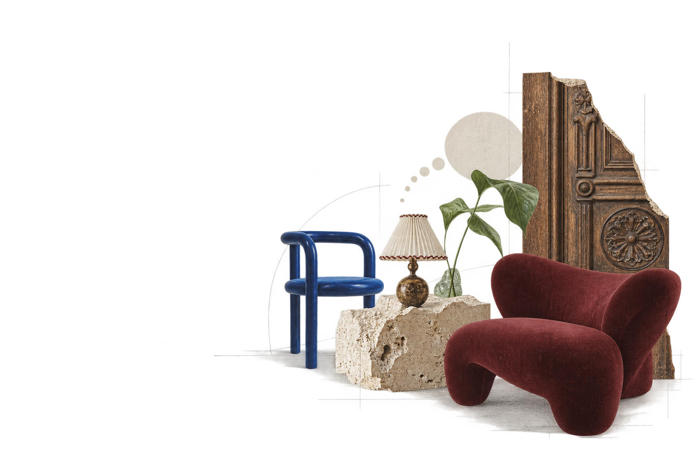
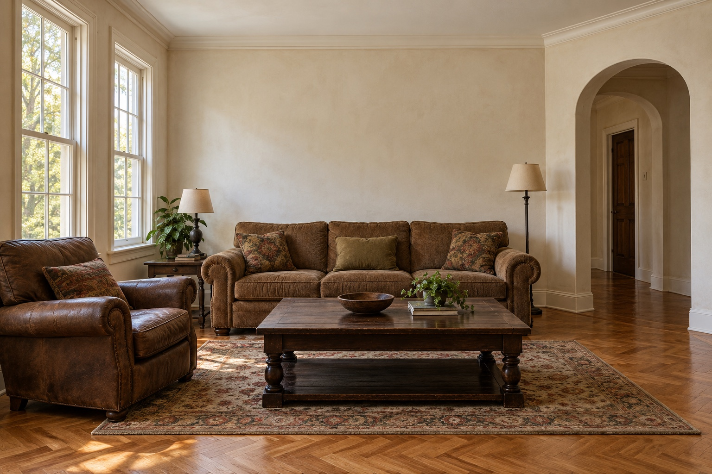
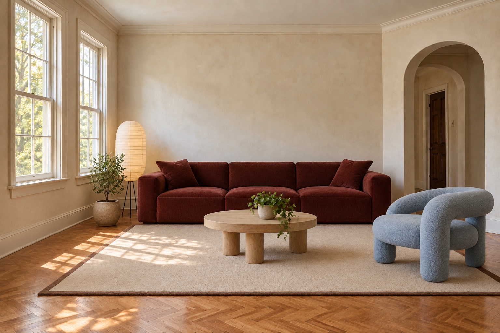
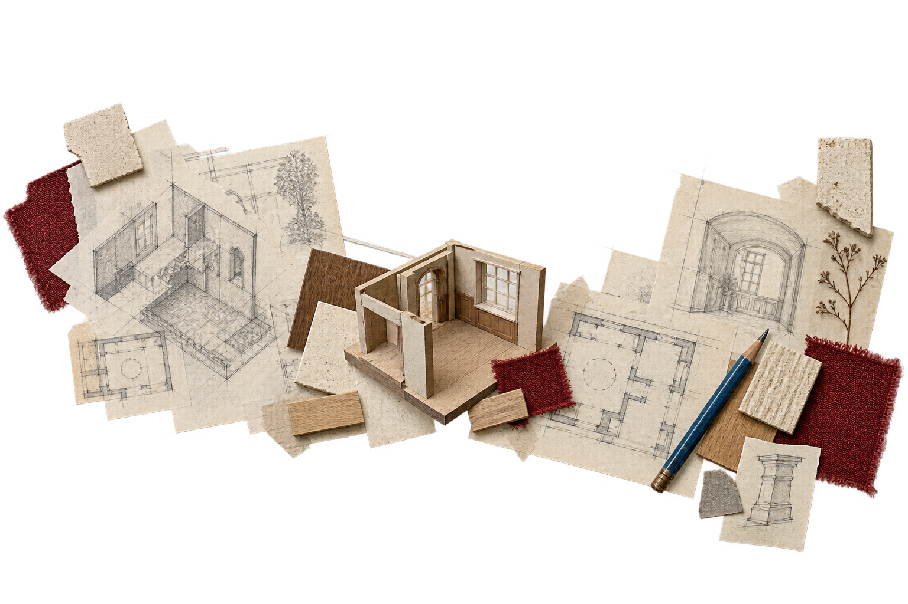

A NEW CHAPTER FOR EXISTING SPACES
Old bones.
New ways to live.
Architecture and interiors for homes and places with a past. We keep what matters, rethink what doesn’t, and make room for what comes next.
See a space reimagined
A place can change.
Without losing itself.
Maybe the rooms no longer work for you. Maybe a building has been waiting for a different purpose. We begin with the same question: what’s worth keeping, and what could life here become?
Architecture
Rethinking existing buildings, extensions and the spaces between.
Interiors
Layout, furniture, materials and light, considered together.
Adaptive reuse
Finding a useful next life for a building with a past.


A room,
reconsidered.
The windows. The old floor. The proportions worth keeping.
Keep scrolling. See what changes.The next life
of a place.
An old workshop, imagined as a neighbourhood cafe and a shared place to make.
ADAPTIVE REUSE / CONCEPT STUDY
A conversation.
Then, possibilities.
We start with how you live, what you love and what isn’t working. Sketches, materials and models help us work out what comes next.

Understand the place
Tell us what works, what doesn’t and what you want to keep. We discuss budget and timing before agreeing the brief.
Compare the options
Compare layouts, sketches and materials before choosing a direction.
Work out the details
We develop the drawings and select materials and furniture, including any surveys or approvals your project needs.
Put the plan into practice
We agree who handles each part of the work and what support you need during making and installation.
Not everything
needs to be new.
We work with the floors, furniture and details you want to keep, and rethink the rest.
Begin with your placeWhat could your
place become?
Tell us where the space is and what you’d like to change.
This is a portfolio concept. Build a sample project brief below; nothing is sent to a studio.
A place to begin.
Preview only. No enquiry has been sent or saved to a server.